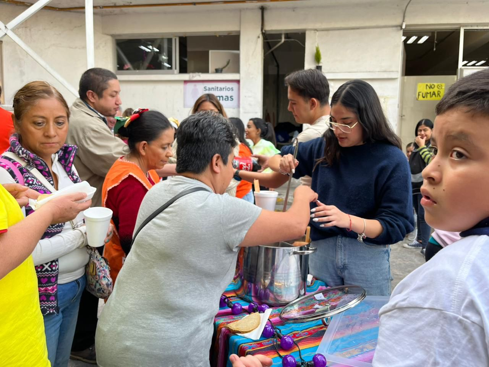

Unidas y unidos por el Cambio
Mi Compromiso
Me dedico a construir un futuro más equitativo para todas y todos, centrando mis esfuerzos en combatir la desigualdad de género y de oportunidades en nuestra sociedad. Juntos, podemos lograr un cambio significativo.
Cultura y Comunidad
Creo firmemente en el poder del arte y la cultura como medios para unir a la gente y fomentar el diálogo.
.jpg)
.jpg)
.jpg)
.jpg)
.jpg)
.jpg)
.jpg)
.jpg)
.jpg)
.jpg)
.jpg)
.jpg)
.jpg)
.jpg)
.jpg)
.jpg)
Sobre Mí

Mi camino ha estado guiado por la convicción de que podemos construir una sociedad más justa y equitativa. Graduada en Gobierno por la Universidad Panamericana, con especialización en Gobierno de Instituciones y Organismos Internacionales en Madrid, y un programa en Economía Política Internacional en la London School of Economics.
Mi experiencia laboral en la Comisión de Trabajo, así como el senado de la República, en la embajada de México en Bélgica y Luxemburgo y diversas campañas políticas, han sido fundamentales en mi carrera. Dentro de mis intereses personales están el arte, el fútbol y la gastronomía. Estos intereses, junto con el inquebrantable apoyo de mi familia, me impulsan a trabajar por y para la comunidad, buscando siempre el bienestar común.
Mis Columnas
Le estamos fallando a las infancias

En este país basta con salir a la calle para atestiguar la triste realidad de las niñas y niños de nuestro país...
Leer másVoltear a ver hacia lo local

Decía Mauricio Merino que “gobernar no solo es responder, sino también seleccionar” en ese sentido la seguridad pública...
Leer másAunque no sea junio

Este año, durante la marcha del orgullo LGBTTTIQ+, vi un cartel levantado por una persona que decía “quiero derechos, no publicidad”...
Leer másUn mundo hecho para hombres

Existen una infinidad de cifras que demuestran la desigualdad laboral hacia las mujeres y el machismo en los lugares de trabajo mi intención...
Leer másDefender al INE es defender a México

Esta reforma significa un peligro para México y nuestra democracia, pues implica un atentado contra la autonomía del INE...
Leer más¿Quiénes cuidan de las que nos cuidan?

No podemos hablar de defender una agenda feminista, sin no estamos hablando de la necesidad urgente de implementar un Sistema Nacional de Cuidados...
Leer másPrensa
Señala Fer Robles que urge trabajar por la desigualdad en CDMX
:quality(75)/media/pictures/2024/01/24/3065538.jpg)
Leslie Fernanda Robles, precandidata a diputada por el Distrito XIII en la CDMX por Movimiento Ciudadano, señaló que le preocupa la desigualdad de género y falta de oportunidades...
Leer másEncabeza Fer Robles protesta tras descubrimiento de restos humanos en obras de cablebus

La emecista Fernanda Robles encabezó las protestas ante trabajadores que realizan las obras de la Línea 7 del Cablebús, en la Alcaldía Miguel Hidalgo...
Leer másFer Robles, la nueva cara de MC para el congreso de la CDMX

Tengo un fuerte y honesto compromiso con la igualdad y la justicia social, me preocupa la desigualdad de género y la falta de oportunidades Sí, porque no decirlo, abrazo la convicción de que debemos construir un país donde todos tengamos un piso parejo...
Leer más